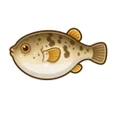
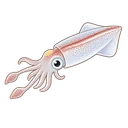

トップ › 旬カレンダー
月別 釣りものカレンダー 無料
| 魚種 | 1月 | 2月 | 3月 | 4月 | 5月 | 6月 | 7月 | 8月 | 9月 | 10月 | 11月 | 12月 |
|---|---|---|---|---|---|---|---|---|---|---|---|---|
| ○ | ○ | ○ | ◎ | ◎ | ◎ | ◎ | ◎ | ◎ | ◎ | ◎ | ○ | |
| - | - | - | - | - | ○ | ◎ | ◎ | ◎ | ◎ | ○ | - | |
| ○ | ○ | ◎ | ◎ | ○ | - | - | - | ○ | ◎ | ◎ | ○ | |
| - | - | - | - | - | - | ○ | ◎ | ◎ | ◎ | ◎ | ○ | |
| - | - | ○ | ◎ | ◎ | ◎ | ○ | ○ | ○ | ◎ | ◎ | ○ | |
| - | - | - | ○ | ◎ | ◎ | ◎ | ◎ | ○ | - | - | - | |
| - | - | - | ○ | ◎ | ◎ | ◎ | ◎ | ○ | - | - | - | |
| ◎ | ◎ | ○ | - | - | - | - | - | - | ○ | ◎ | ◎ | |
| - | - | - | - | ○ | ◎ | ◎ | ◎ | ◎ | ○ | - | - | |
| - | - | - | - | ○ | ◎ | ◎ | ◎ | ◎ | ○ | - | - | |
| ◎ | ◎ | ◎ | ○ | ○ | - | - | - | ○ | ○ | ◎ | ◎ | |
| ◎ | ◎ | ◎ | ○ | ○ | - | - | - | - | ○ | ◎ | ◎ | |
| - | - | - | - | ○ | ○ | ◎ | ◎ | ◎ | ◎ | ◎ | ○ | |
| ◎ | ◎ | ○ | ○ | ○ | ○ | ○ | ○ | ◎ | ◎ | ◎ | ◎ | |
| ○ | ○ | ○ | ○ | ○ | ○ | ○ | ○ | ◎ | ◎ | ◎ | ◎ | |
| - | - | - | - | ◎ | ◎ | ◎ | ◎ | ◎ | - | - | - | |
| ◎ | ◎ | ◎ | ○ | ○ | ○ | ○ | ○ | ○ | ◎ | ◎ | ◎ | |
| - | ○ | ◎ | ◎ | ◎ | ○ | - | - | - | - | - | - | |
| ◎ | ◎ | ○ | ○ | ○ | ○ | ○ | ○ | ○ | ○ | ◎ | ◎ | |
| - | - | - | ◎ | ◎ | ○ | - | - | ◎ | ◎ | ◎ | - | |
| ◎ | ◎ | ◎ | ◎ | ○ | - | - | - | - | - | ○ | ◎ | |
| ○ | ○ | ○ | ○ | ◎ | ◎ | ◎ | ◎ | ◎ | ○ | ○ | ○ | |
| - | - | - | - | ○ | ◎ | ◎ | ◎ | ◎ | ○ | - | - | |
| - | - | ○ | ◎ | ◎ | ◎ | ○ | - | ○ | ○ | ○ | - | |
| - | - | ○ | ◎ | ◎ | ◎ | ○ | ○ | ○ | ○ | ○ | - | |
| - | - | - | ○ | ◎ | ◎ | ○ | - | ◎ | ◎ | ◎ | - | |
| - | - | - | - | - | - | ◎ | ◎ | ◎ | ○ | - | - | |
| - | - | - | - | - | ○ | ◎ | ◎ | ◎ | ◎ | ◎ | - | |
| - | - | - | - | - | ○ | ◎ | ◎ | ◎ | ◎ | - | - | |
| - | - | - | ○ | ◎ | ◎ | ○ | ○ | ◎ | ◎ | ◎ | ○ | |
| - | - | - | - | ○ | ◎ | ◎ | ◎ | ◎ | ◎ | ○ | - | |
| - | ○ | ◎ | ◎ | ◎ | ◎ | - | - | - | - | - | - | |
| ◎ | ◎ | ◎ | ◎ | ○ | ○ | ○ | ○ | ○ | ◎ | ◎ | ◎ | |
| - | - | - | - | ○ | ◎ | ◎ | ◎ | ◎ | ○ | - | - | |
| - | - | - | - | - | ○ | ◎ | ◎ | ◎ | ◎ | ○ | - | |
| ◎ | ◎ | ◎ | ◎ | ○ | - | - | - | - | ○ | ◎ | ◎ | |
| ○ | ○ | ○ | ◎ | ◎ | ◎ | ◎ | ◎ | ◎ | ◎ | ◎ | ○ | |
| ◎ | ◎ | ○ | - | - | - | - | - | - | ◎ | ◎ | ◎ | |
 アカメフグ | ○ | ○ | ○ | ○ | ○ | - | - | - | - | ○ | ◎ | ◎ |
| ○ | ○ | - | - | - | - | - | - | ○ | ◎ | ◎ | ◎ | |
 スジイカ | - | - | - | - | ○ | ◎ | ◎ | ◎ | ◎ | ○ | - | - |
| - | - | - | ○ | ◎ | ◎ | ◎ | ◎ | ◎ | ○ | ○ | - | |
| ○ | ○ | - | - | - | - | - | - | ○ | ◎ | ◎ | ◎ | |
| ○ | ○ | - | - | - | - | - | - | ○ | ◎ | ◎ | ◎ | |
| ○ | ○ | ○ | ○ | ○ | ○ | ○ | ○ | ◎ | ◎ | ◎ | ◎ | |
| ◎ | ◎ | ◎ | ○ | - | - | - | - | ○ | ○ | ◎ | ◎ | |
| ◎ | ◎ | ◎ | ◎ | ○ | ○ | ○ | ○ | ○ | ○ | ◎ | ◎ | |
| - | - | - | - | - | ○ | ◎ | ◎ | ◎ | ○ | - | - | |
| ◎ | ◎ | ◎ | ◎ | ○ | - | - | - | - | ○ | ○ | ◎ | |
| ○ | ○ | ○ | ○ | ○ | ○ | ○ | ○ | ○ | ○ | ○ | ○ | |
| ◎ | ◎ | ○ | ○ | ○ | ○ | ○ | ○ | ○ | ◎ | ◎ | ◎ | |
| - | - | ◎ | ◎ | ◎ | ◎ | - | - | - | - | - | - | |
| - | - | - | - | ○ | ◎ | ◎ | ◎ | ◎ | ◎ | - | - | |
| ○ | ○ | ○ | ○ | ○ | ○ | ○ | ○ | ○ | ○ | ○ | ○ | |
| ◎ | ◎ | ◎ | ◎ | ○ | - | - | - | - | ○ | ○ | ◎ | |
| - | - | - | - | ○ | ◎ | ◎ | ◎ | ◎ | ○ | - | - | |
| - | - | - | - | ○ | ◎ | ◎ | ◎ | ◎ | ◎ | ○ | - | |
| - | - | ○ | ◎ | ◎ | ◎ | ◎ | ◎ | ◎ | ○ | ○ | - | |
| - | - | - | - | ○ | ◎ | ◎ | ◎ | ◎ | - | - | - |
月別 釣りもの解説 無料
夏を迎え多彩な魚種が釣れる好シーズン。タチウオが東京湾で本格シーズン開幕し、夜釣り・日中釣りともに人気が高い。マダイは乗っ込み後期で数は落ち着くが、産卵後の荒食いで型狙いが楽しい。イサキが各地で最盛期を迎え、静岡・千葉で数釣り炸裂。シロギスは浅場で好調継続。マダコが東京湾内で解禁になる港が増え、船タコ釣りが人気を集める。スルメイカが沖合で釣れ盛り。カツオ・ワラサなど青物の回遊情報も入り始め、沖合への出船が増える。夏日の多い6月は早朝出船の時合いを逃さないことが釣果を左右する。
真夏のハイシーズン。タチウオが東京湾で最盛期を迎え、指4本超えのドラゴンサイズ狙いに船が集まる。夜釣り・日中釣りともに人気で、予約が早期に埋まることも多い。イサキは各地でまだ好調で数釣りが楽しめる。シロギスは夏の浅場釣りとして安定した釣果を見せる。マダコが東京湾内で旬ピーク。スルメイカは沖合で引き続き好調。カツオが房総・静岡沖に接岸し始め、トップシーズン前の期待が高まる。マダイは夏の水温上昇期に入り活性がやや落ちるが、深場狙いで型物が出る。猛暑の時期は早朝の時合いを重視し、水分補給と熱中症対策を万全に。
盛夏の釣りは早起きが鍵。タチウオは最盛期継続で大型のドラゴンサイズが多い。カツオが房総・相模湾沖で最盛期を迎えカツオ船が大にぎわい、10〜15kgのメジ（キハダマグロ若魚）が混じることもある。シロギスは引き続き数釣りシーズン。スルメイカは沖合で安定。マダコも数が揃う時期。シマアジ・カンパチなど夏の高級魚も狙い目。イナダ（ブリの若魚）が各地で回遊しお手軽青物釣りとして人気。アジも夏場にコンスタントに釣れる。水温が高く魚の活性は高いが、炎天下の釣りは体力消耗が激しいため、日よけ・こまめな水分補給が必須。
水温がピークを迎え青物の活性が最高潮。カツオは房総・静岡沖で引き続き好調。タチウオは秋口でドラゴンサイズが多く、数も型も年間ベストの時期。アジは秋の荒食いで数釣りが絶好調で、束釣りも珍しくない。マダイも秋の乗っ込みに向けて活性が上がり始め型狙いに期待。シロギスはシーズン後半で数は落ち着くが良型が出る。イナダ・ワラサが各地で回遊し青物ファンを楽しませる。カンパチ・シマアジも9月いっぱいが狙い目。カワハギが浅場に上がり始め、各港でシーズン開幕の声が上がり始める。秋の行楽シーズンとも重なり、船釣り人気が高まる時期。
秋の行楽シーズン、船釣りも多彩。カワハギが浅場で旬ピークを迎え、肝パン（肝臓が肥大した）の良型が揃う。刺身・肝和えとして食味も抜群。タチウオは秋の大型シーズンで指4〜5本超えの大物狙いが楽しい。アジは秋の荒食いで絶好調が続き、束釣りも期待できる。マダイは秋の乗っ込みで型が大きくなり3〜5kgも狙える。ワラサ・イナダが引き続き回遊。ヤリイカが相模湾・千葉でシーズン開幕し、型狙いで人気が高い。フグも秋のシーズン入りで活性が高くなってくる。マハタ・クロムツなど深場根魚の実績も上がり、船が多種多様な魚を狙える最も充実した時期の一つ。
秋深まり型狙いに最適な季節。カワハギは肝が最も肥える11月が一番の旬で、久里浜・剣崎・小柴エリアで良型の数釣りが楽しめる。ヤリイカが本格シーズン突入し、相模湾・千葉では大型の良型が揃う。アジは秋〜冬にかけて引き続き安定。タチウオはシーズン終盤だが良型は出る。マダイは深場中心で型狙い。フグが関東全域で本格シーズン入りし、ショウサイフグ・アカメフグが活発に動く。クロムツ・アカムツなど冬の高級深場魚が好調になり始める。ヒラメも浅場に上がり始めシーズン開幕。カサゴ・メバルも活性が上がりシーズン入り。水温低下とともに各魚種が荒食いに入り、型物が揃いやすい。
冬本番、大物狙いの季節。ヤリイカは産卵前の荒食いで大型が多く、束釣りも期待できる数釣りシーズン。相模湾・千葉で型も数も揃う。ヒラメが冬の荒食いシーズンで型が大きく3kg超えも珍しくなく、大原・鴨川への遠征釣りとして人気が高い。アジは年末も好調で、脂のりの良い良型が揃い忘年会の食材として人気。フグは荒食いで厚みのある良型が揃い、食味も最高峰。クロムツ・アカムツの深場釣りが最盛期を迎え、高級魚狙いの釣り人で賑わう。カサゴ・メバルは寒さに強く安定した釣果。水温低下で食い渋りも多いが、口を使ったときの型が大きい。年末最後の釣行先としてヒラメ・ヤリイカが特に人気。
厳冬期に入り外洋は波が高い日が多くなるが、東京湾奥の寒アジが絶好調。金沢八景・羽田沖では20〜25cmの良型が揃い、1束（100匹）超えも珍しくない。身が締まって脂がのり、食味は一年で最高の時期だ。フグは関東全域で乗っ込みシーズン真っ只中で型が揃い、大原港の越冬ヒラメは3kg超えも期待できる。ヤリイカは相模湾・千葉勝浦で釣果が安定し、型狙いに最適。カサゴ・メバルは冬の根魚として各港でコンスタントに出る。水温が低く全体的に活性は低いが、口を使った個体は型が大きい傾向があるため、仕掛けをシンプルに丁寧に誘うのがコツ。
冬の底値を迎えるが、東京湾奥の寒アジは引き続き絶好調。身の締まった良型が揃い数釣りを楽しめる。フグは産卵前の荒食いで型が大きくなる時期で、鹿島・大原エリアでは良型のショウサイフグ・アカメフグが揃う。大原・鴨川のヒラメは乗っ込みシーズン継続で、遠征釣りの筆頭ターゲットとして人気が高い。カサゴ・メバルは産卵前の荒食いで数釣りが楽しめ、ヤリイカは相模湾深場で安定した釣果を維持する。2月後半からは水温の底打ちを迎え、3月のマダイ乗っ込み開幕に向けて釣果が徐々に上向いてくる兆しが現れる。
春が近づき水温が徐々に上昇する端境期。マダイの乗っ込みシーズンが開幕し、久里浜・剣崎沖でテンヤ・コマセ釣りが盛んになる。3〜5kgの良型が出始め、ゴールデンウィークに向けて期待が高まる時期だ。フグは産卵期に向けて終盤を迎えるが、型の大きい個体が多くまだ十分狙える。ヒラメはそろそろ終盤戦。イサキが徐々に浅場に上がってくる兆しがあり、千葉外房・静岡エリアで早期の釣果報告が入ることも。アジは春の旬ピークに向けて釣果が上向き始める。シロギスも4月開幕に向けて準備中で、暖かい日には浅場で顔を見せ始める。
春本番。マダイの乗っ込みが最盛期を迎え、産卵前の荒食いで型・数ともに期待大。剣崎沖・久里浜・走水ではテンヤ・コマセともに好釣果が続き、3kg超えの良型が数釣りできることもある。シロギスが浅場に上がり始めシーズン開幕、天気の良い凪ぎの日には数釣りが楽しめる。イサキも千葉・静岡エリアで釣果が出始め、アジは春の旬ピークで東京湾奥を中心に数釣りが楽しめる。4月後半からはワラサ・イナダの回遊情報も入り始め、青物狙いの出船も増える。タチウオは5月解禁に向けて期待が高まる。水温上昇とともに魚の活性が一気に高くなるシーズン。
船釣りの最盛期。マダイは乗っ込みピーク〜後期で数・型ともに期待大。シロギスは本格シーズン突入で束釣りも現実的。イサキも千葉外房・静岡沖で開幕し、大型の型釣りが楽しい。アジは数釣り全盛期で、東京湾奥の各港では100匹超えの釣果も珍しくない。ヤリイカは相模湾・千葉でシーズン終盤、スルメイカが沖合で釣れ始める。マゴチが浅場に上がり始めシーズン開幕。ワラサ・イナダも回遊が活発化し、タチウオは東京湾で解禁され注目度が高まる。5月はほぼどの魚種も何らかの旬を迎えており、船釣り初心者から上級者まで楽しめる最良のシーズン。